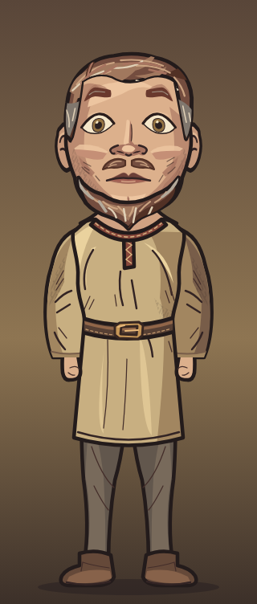

<!doctype html><html lang="ru"><meta charset="utf-8"><meta name="viewport" content="width=device-width,initial-scale=1"><title>Рельеф подбородка</title><style>body{font:16px system-ui;background:#25201b;color:#eee2cd;margin:0 auto;max-width:1280px;padding:1rem}
    a{color:#f4ca91}h1,h2{font:700 1.7rem Georgia,serif}nav ul{columns:3}.grid{display:grid;gap:1rem;
    grid-template-columns:repeat(auto-fit,minmax(230px,1fr))}article{min-width:0;border:1px solid #655343;
    background:#312821;padding:.6rem;border-radius:5px}a img{vertical-align:middle}img{max-width:100%;height:auto}
    .character{display:block;max-height:460px;width:auto;margin:auto}.card{width:32px;height:32px}
    .detail{display:block;width:100%;margin:.35rem 0}.compare{display:flex;align-items:flex-start;gap:.5rem}
    .compare a{flex:1;min-width:0}small{color:#dccab0}code{overflow-wrap:anywhere}@media(max-width:730px){nav ul{columns:1}}</style><main><nav><a href="index.html">Все разделы</a></nav><h1>Рельеф подбородка</h1><div class="grid"><article id="appearance__chin_mark__standard"><h3>Обычный</h3><code>standard</code><a href="images/b232f7c749d72672ffaaa2eddac1f55747f6466a99ebb4d5802b12b690f60840.png"></a><p><a href="images/a6f4bfe7a05a40c144deb2eccd021394b6b3920a6549c130e6c28d7e7e55ba48.png"></a> <small>32 × 32</small></p></article>
<article id="appearance__chin_mark__cleft"><h3>Раздвоенный</h3><code>cleft</code><a href="images/74834b0a82347e4190c6fdf20b682db9a072e01e2d701d7b5b995b88d2067585.png"></a><p><a href="images/0b10f45588350f151e17fba626206adf44bdd6e11c68d5e7714e576226d5ca41.png"></a> <small>32 × 32</small></p></article>
<article id="appearance__chin_mark__dimple"><h3>С ямочкой</h3><code>dimple</code><a href="images/35292157f0ba1d90afa5a65af5198356e162d674847a8dc00a660d6d27b4e491.png"></a><p><a href="images/11d7b7bd2b5f6d6ab4471e1e12aeb4d7e497d0b62fce05cd2ef99814e80eeba8.png"></a> <small>32 × 32</small></p></article></div></main></html>
